關於迷鹿
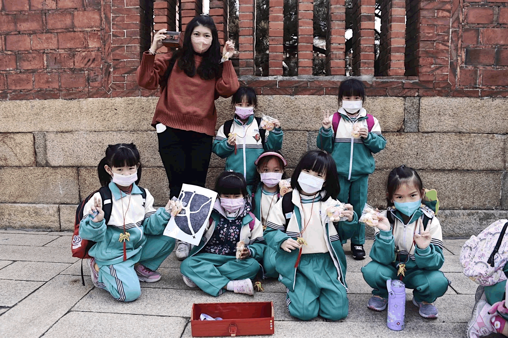 |
體驗實地走訪，從實境遊戲認識在地
|
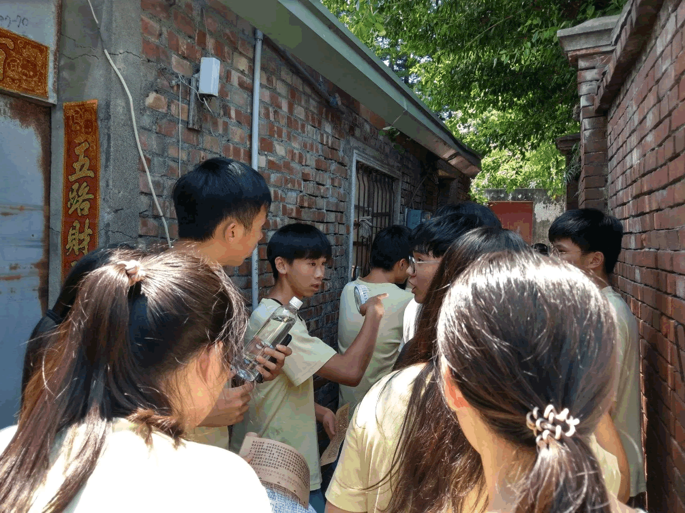 |
激發學習熱情與興趣
|
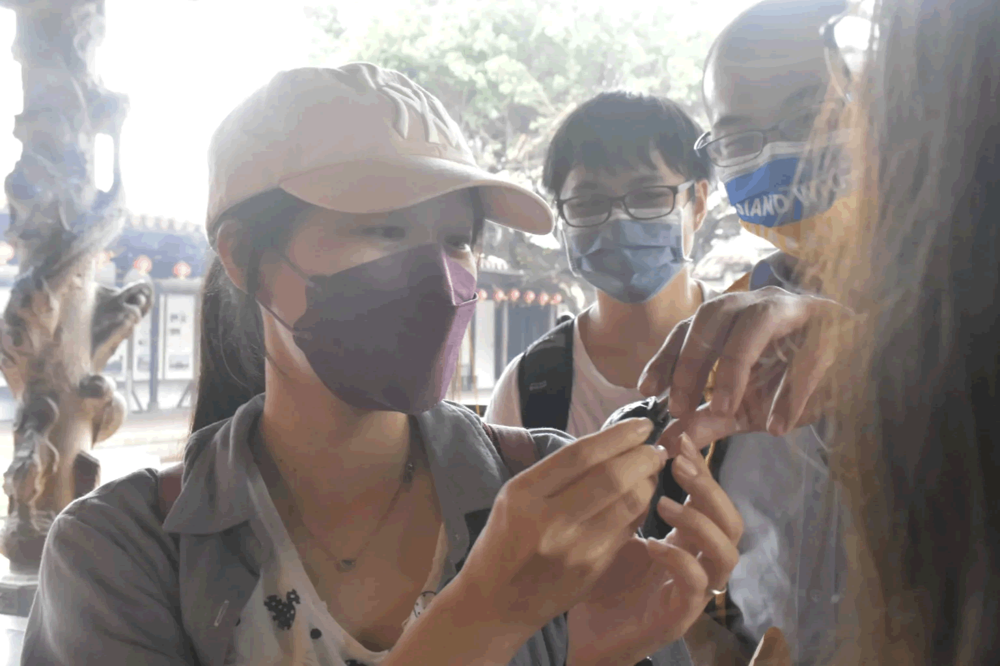 |
適合各種年齡層體驗遊玩
|
學習團隊合作解謎與破關 |
結合鹿港不同地區的文化遊戲設計 |
接受客製化與需求調整 |
除了知識上的學習， 如何團隊合作，同心協力一起破解任務， 也是迷鹿任務的重要核心。 |
迷鹿任務有 北頭漁村、九曲巷、龍山寺…等， 不同鹿港地區的文化遊戲版本。 |
迷鹿任務是一款接受調整與客製化的遊戲， 若有客製化需求， 歡迎填寫留言表單與我們一起討論！ |
迷鹿任務版本介紹
郭陸生的北頭錦囊 |
九曲迷航 |
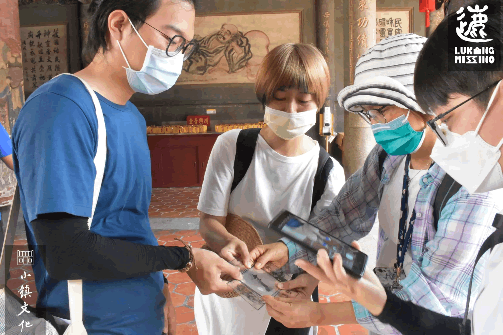 |
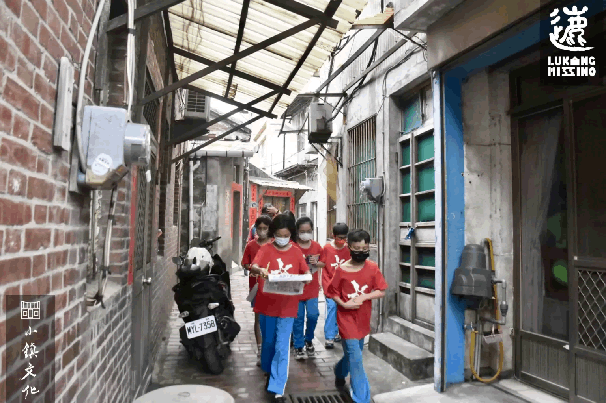 |
遊戲故事： |
遊戲故事： |
洪門祕寶 |
廈郊秘寶 |
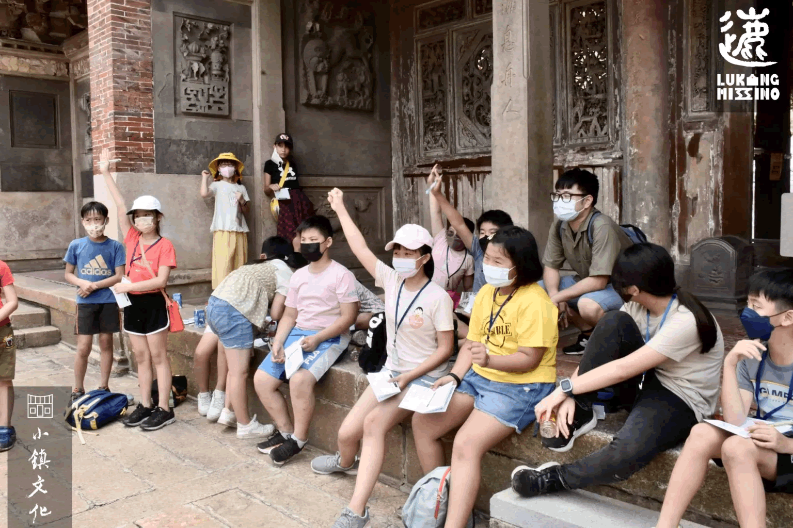 |
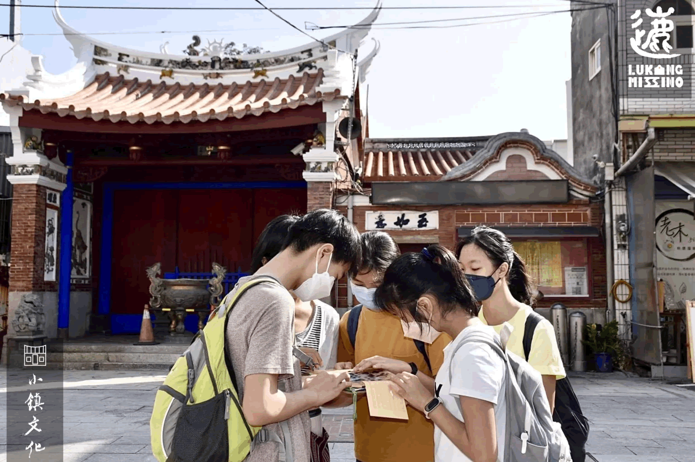 |
遊戲故事： |
遊戲故事： |
おかあさん的回憶 |
神秘儀式 |
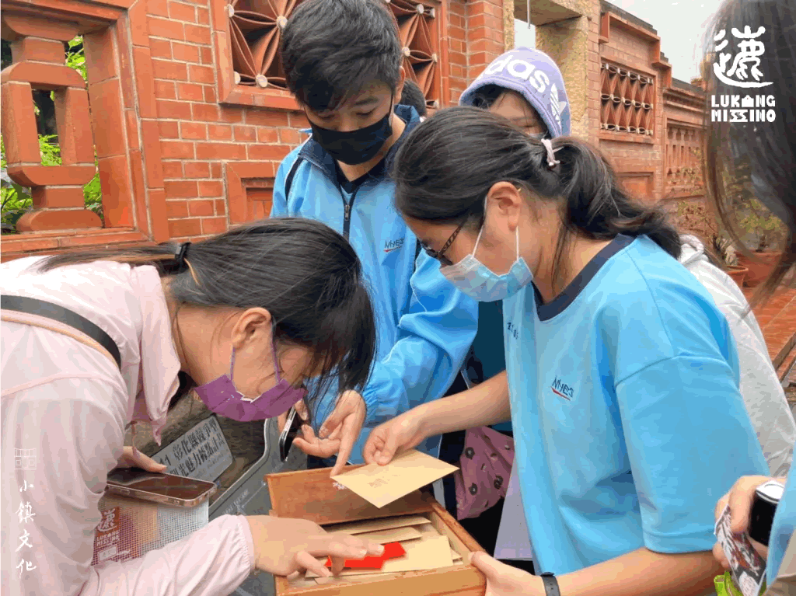 |
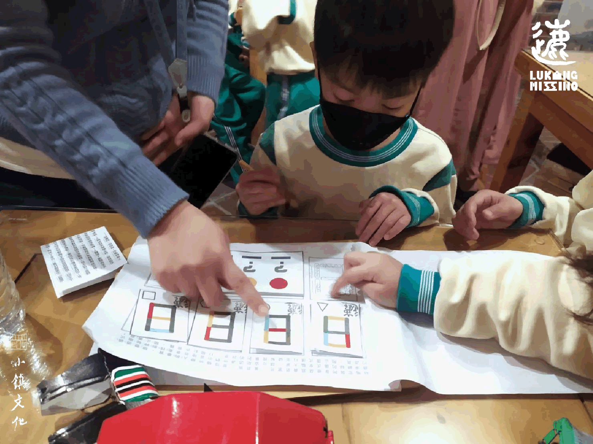 |
遊戲故事： |
遊戲故事： |
老街迷鹿趣 |
鹿港味小學堂 |
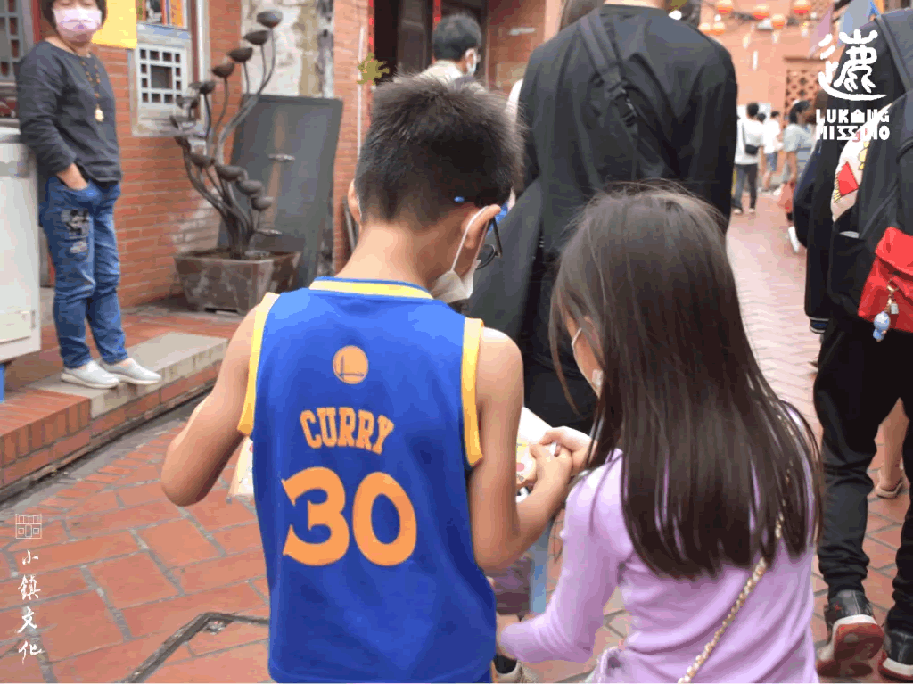 |
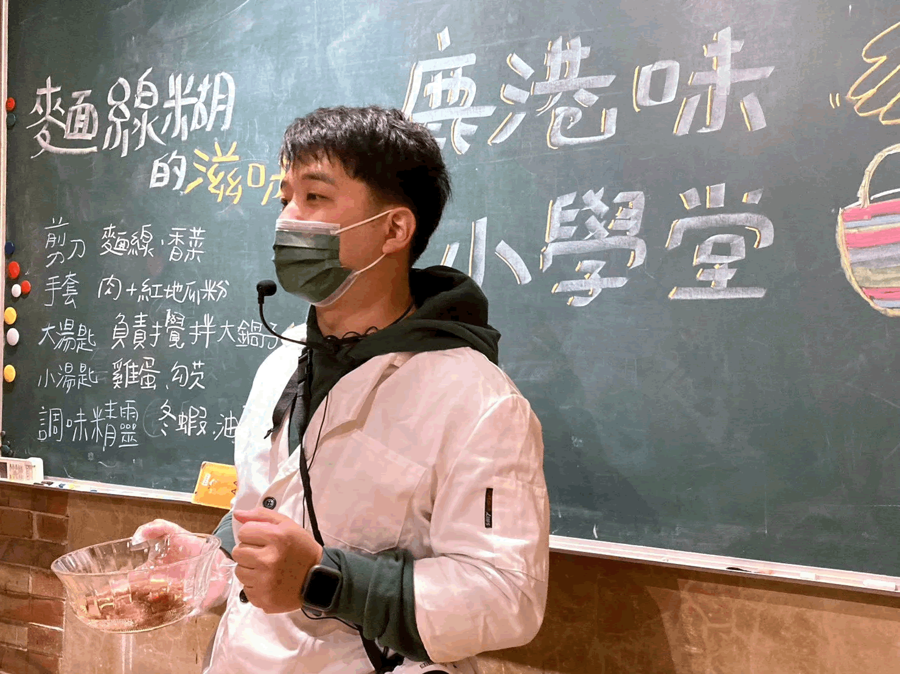 |
遊戲故事： |
遊戲故事： |
鹿港茉莉人文環境教育中心 |
||
營業時間 週三–週五： 13:00–17:00 |
位置 鹿港鎮中山路127號後棟 |
聯絡 04 778 3357 lukangmolly@gmail.com |
聯絡我們： |
小鎮文化團隊： |
地址：鹿港鎮郭厝巷32-1號
|
小鎮資產管理有限公司
|
小艾人文背包客棧
|
北頭娛椿共同實驗空間
|